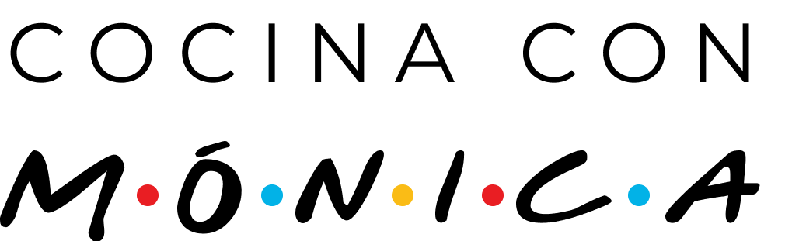

<nav class="navbar navbar-expand-lg navbar-light bg-light">
  <div class="container">
    <a class="navbar-brand" routerLink="/home">
      
      <!-- Puedes reemplazar "assets/img/logo.png" con la ruta real de tu imagen del logo -->
    </a>
    <button class="navbar-toggler" type="button" data-bs-toggle="collapse" data-bs-target="#navbarNav" aria-controls="navbarNav" aria-expanded="false" aria-label="Toggle navigation">
      <span class="navbar-toggler-icon"></span>
    </button>
    <div class="collapse navbar-collapse justify-content-end" id="navbarNav">
      <ul class="navbar-nav">
        <li class="nav-item">
          <a class="nav-link" routerLink="/welcome" routerLinkActive="active">Bienvenida</a>
        </li>
        <li class="nav-item">
          <a class="nav-link" routerLink="/login" routerLinkActive="active">Login</a>
        </li>
         <li class="nav-item">
          <a class="nav-link" routerLink="/home" routerLinkActive="active">Home</a>
        </li>
        <li class="nav-item">
          <a class="nav-link" routerLink="/recipes" routerLinkActive="active">Recetas</a>
        </li>
      </ul>
    </div>
  </div>
</nav>